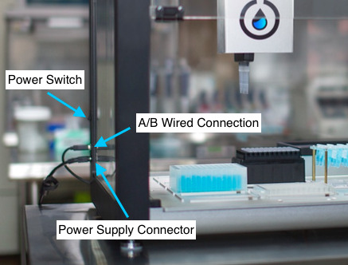
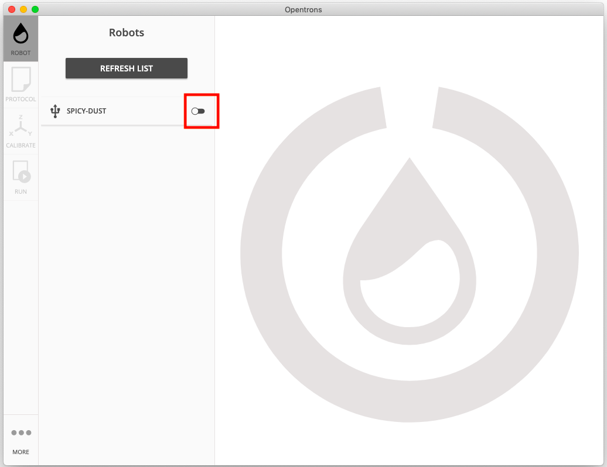
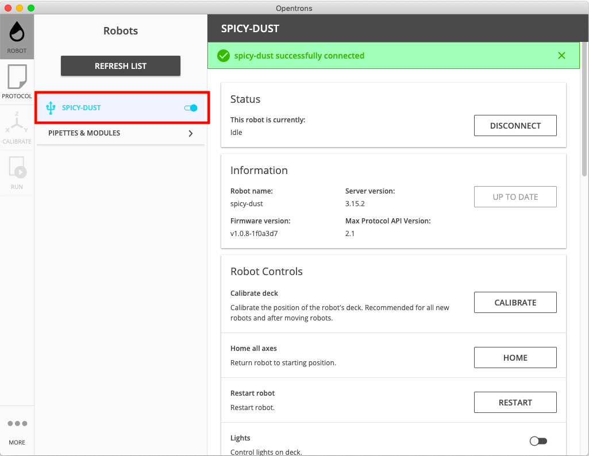
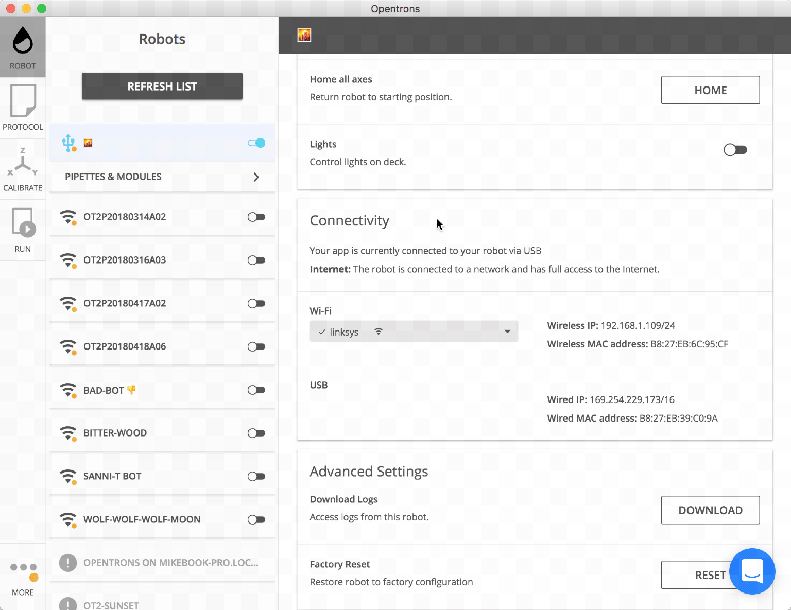
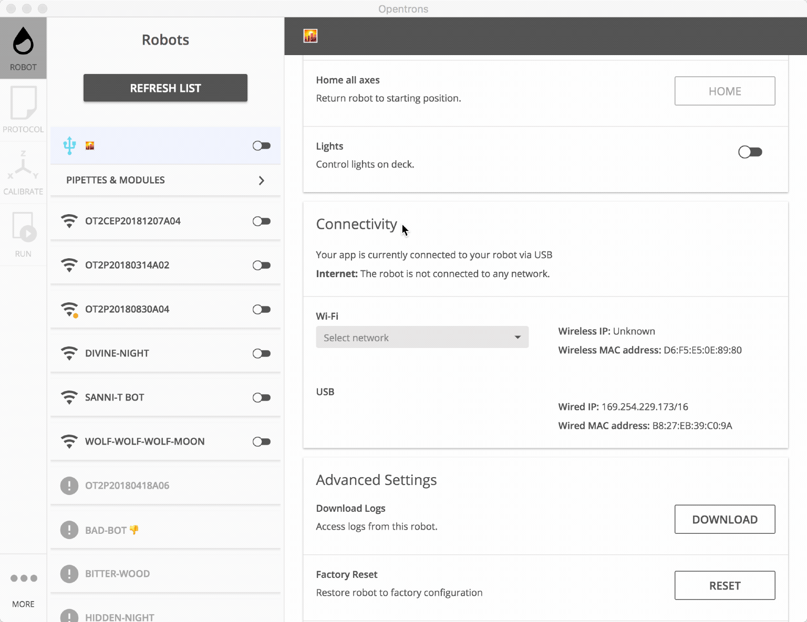
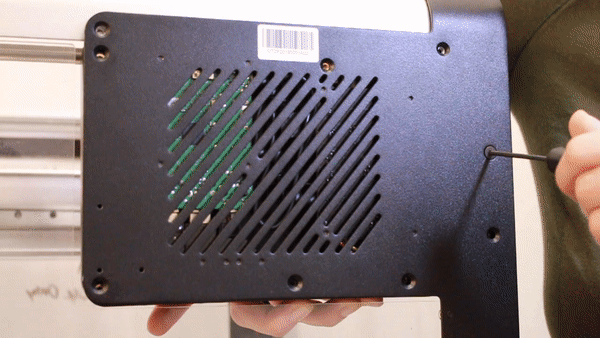
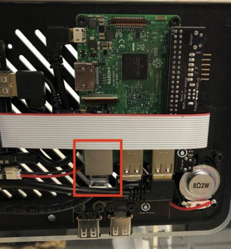
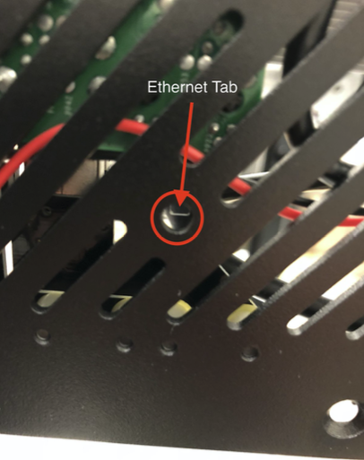

Conexión del robot.
Encender el robot.
- Personal necesario
-
-
IN. Técnico de instalación.
-
- Herramientas/Material necesario
-
-
Fuente de alimentación: 36V - 10A
-
Regletas de enchufe (*)
-
- Operaciones/Pasos
| Paso | Herramientas | Detalle, Fotos y/o diagramas |
|---|---|---|
1: Enchufe el OT-2 |
Fuente de alimentación: 36V - 10A |
Al conectar la fuente de alimentación al robot, asegúrese de que está en la orientación correcta. Localice el conector de la fuente de alimentación en la parte posterior izquierda  |
2: Verifique que la puerta está cerrada |
Antes de encender u operar con su OT-2 asegúrese de cerrar la puerta frontal. |
|
3: Encienda el OT-2 |
Accione el interruptor de encendido de la fuente de alimentación. |
| Notas |
|---|
Escriba en este espacio las notas e incidencias del proceso
. |
Conexión vía USB.
Debe usar un cable USB para hacer la primera conexión con Su OT-2. Un cable USB A/B está incluido en su pedido.
- Personal necesario
-
-
IN. Técnico de instalación.
-
- Herramientas/Material necesario
-
-
Ordenador personal
-
Aplicación OT-2
-
Cable USB A/B
-
- Operaciones/Pasos
| Paso | Herramientas | Detalle, Fotos y/o diagramas |
|---|---|---|
1: Enchufe el cable USB A/B en el puerto USB A/B |
Cable USB A/B |
Para conectar el robot a través de USB, enchufe el cable USB A/B en el puerto USB A/B. Espere unos segundos para que su ordenador establezca la conexión antes de abrir el App OT-2. |
2: Espere a que la App reconozca el robot |
Aplicación OT-2 |
La aplicación busca robots automáticamente. Los robots disponibles aparecerán en Robots. |
3: Conéctese al robot |
Aplicación OT-2 |
Para conectarse, cambia el interruptor junto al nombre de tu OT-2. A veces es necesario intentarlo varias veces antes de que el robot establezca la conexión con la aplicación.  |
3: Espere a que el robot reconozca la conexión |
Cuando el OT-2 se conecta con éxito, el botón de conmutación se vuelve azul. Una vez que se establezca esta conexión, podrá conectarse por wifi, opciopnalmente.  |
Solución de problemas con las conexiones USB
Si tu OT-2 no aparece en la aplicación OT-2 aunque esté conectada a tu ordenador mediante un cable USB, estás experimentando problemas de conexión.
No se preocupe, en la mayoría de los casos, estos problemas son fáciles de resolver. Siga esta guía para resolver los problemas más comunes.
Asegúrate de que tu OT-2 esté encendido
Ciclo de energía de su OT-2. (Use el interruptor de encendido para apagarlo, espere varios segundos y luego vuelva a encenderlo).
Al reiniciar, busque lo siguiente:
-
La luz azul en la parte delantera del OT-2 debe parpadear, y luego se vuelve sólida.
-
Las pipetas deberían subir a su máxima altura, si es que no están ya allí, y hacer un zumbido.
Si esos eventos no ocurren dentro de los 5 minutos de encender el robot, contacte al Soporte de Opentrons.
Intente esperar después de conectar su OT-2 a su ordenador
Si haces clic en el botón de la lista de Intentos o de Refrescos demasiado rápido después de conectar el cable USB, es posible que tu OT-2 no aparezca en la aplicación de Opentrons. (Este es un problema conocido que planeamos arreglar en una futura actualización del software).
Para solucionar este problema:
-
Enciende el OT-2 y espera a que la luz del anillo se ilumine en azul sólido.
-
Enchufa el cable USB de tu OT-2 en tu ordenador.
-
Espera 60 segundos.
-
Luego, haga clic en Intentar de nuevo o en Actualizar lista.
Su OT-2 debería estar disponible para ser conectado. Si no es así, continúe con los siguientes pasos de solución de problemas.
¿Sigue teniendo problemas?
Asegúrate de que la interfaz de la red esté configurada correctamente. Puede que necesite configurar la interfaz de red del robot a "Link-Local" explícitamente.
Asumiendo que no puedes conectarte al robot por USB:
-
Abre la aplicación "Settings"
-
Navegue hasta "Red"
-
Encuentra el adaptador de red alámbrica que está o bien "Conectando" (y fallando en la conexión) o "Apagado"
-
Al conectar el robot, después de unos minutos puede que ya haya visto una notificación por un fallo de conexión a la red
-
Haga clic en el icono del engranaje y navegue hasta la pestaña IPv4
-
Ponga el "Método IPv4" en "Sólo enlace local".
Después de unos segundos, la interfaz debería auto-asignar una dirección IP de enlace local. Intenta abrir la aplicación para ver si aparece el robot.
¿Todavía tienes problemas?
Sentimos que aún tengas dificultades. Por favor, contacte con el soporte de Opentrons, y lo solucionaremos.
| Notas |
|---|
Escriba en este espacio las notas e incidencias del proceso
. |
Conexión por WiFi.
La conexión por WiFi es necesaria como contingencia a la hora de conectar los robots OT-2 a una red local Ethernet.
| Una vez que desconecte el cable ethernet interno dentro del robot, el puerto USB al lado del panel se volverá inútil. Por favor, asegúrate de que has conectado tu robot a la wifi antes de iniciar este proceso para asegurarte de que tienes una forma alternativa de conectarte al robot durante la configuración en caso de que todo salga mal. |
Se pueden ejecutar los protocolos de forma inalámbrica, desde cualquier lugar, siempre y cuando el ordenador esté en la misma red que el OT-2.
| Por favor, lee los requisitos de red para el OT-2 para asegurarte de que tu entorno de red está correctamente configurado. |
| Asegúrese de que está ejecutando la última versión de la aplicación Opentrons y que su robot está completamente actualizado. Sólo cambie la red Wi-Fi de su robot mientras esté conectado a través de USB a Ethernet. De lo contrario, perderá la conexión con su robot cuando salga para unirse a la nueva red. |
- Personal necesario
-
-
IN. Técnico de instalación.
-
- Herramientas/Material necesario
-
-
Ordenador personal
-
Aplicación OT-2
-
- Conexión a una red WPA2 Personal
-
WPA2 Personal es una red Wi-Fi estándar que requiere una contraseña. Para conectarse a una red WPA2 Personal:
1- Vaya a Conectividad > Wi-Fi. 2- Selecciona tu red en la lista desplegable. 3- Introduce la contraseña de la red. 4- Haz clic en Join. Tu OT-2 intentará unirse a la red.

- Conexión a una red WPA2 Enterprise
-
Una red WPA2 Enterprise (también conocida como 802.1x y "eduroam") es una red Wi-Fi con mecanismos de autenticación adicionales para mayor seguridad.
Las credenciales que tendrá que proporcionar dependen de cómo se haya configurado la red. Si no está seguro, pregunte a su equipo de TI.
1- Vaya a Conectividad > Wi-Fi. 2- Seleccione su red en la lista desplegable. 3- Selecciona el método de autenticación de la red, tal y como te lo indique tu equipo de TI. 4- Introduce tus credenciales, tal y como te las ha proporcionado tu equipo de TI. 5- Haz clic en Join. Tu OT-2 intentará unirse a la red.

- Conexión a una red Wi-Fi abierta
-
Puedes conectar tu OT-2 a una red Wi-Fi sin ninguna seguridad, pero no lo recomendamos. En una red Wi-Fi no segura, cualquiera podría controlar tu robot. ¡En serio! 😱
Renombrar el robot.
Cada robot de la instalación deberá tener un nombre descriptivo que indique su función, grupo y posición el el mismo. Se propone como estándar que los nombres de los robot sigan la siguiente notación:
S3-tn
Siendo t el tipo de robot, A, B o C, y n el número de robot de este tipo.
Así, por ejemplo, el tercer robot de tipo B, extracción de ARN, será el S3-B3
Para ello se deben ejecutar los scripts en la carpeta rename_robots con la aplicación Opentrons. Ejecutar uno por cada robot y reiniciarlo desde la misma aplicación.
Si es preciso, puede editar los scripts para cambiar el nombre de cada robot al que tienen asignado por defecto.
| Notas |
|---|
Escriba en este espacio las notas e incidencias del proceso
. |
Asignar IPs estáticas.
En caso de conectar los robots a una red local, para evitar algunos problemas con la asignacion dinámica de IPs, se debe asignar una dirección IP estática a cada uno de ellos.
En primer lugar es preciso definir el direccionamiento IP a utilizar, según indicaciones del Hospital, y asignar una IP a cada uno de los robots.
Por ejemplo, si se va a utilizar la red 172.26.0.0/16, los robots podrían tener las siguientes direcciones: 172.26.t.n, es decir
los dos últimos bytes de la IP se podrán fijarán con respecto al grupo y al número de robot.
| Nombre | IP |
|---|---|
S3-A1 |
172.16.1.1 |
S3-A2 |
172.16.1.2 |
S3-B1 |
172.16.2.1 |
… |
|
S3-B4 |
172.16.2.4 |
… |
|
S3-C2 |
172.16.3.2 |
También se podrían asignar IPs estráticas a los ordenadores.
Es importante editar los script en python *_static_ip.py, y cambiar la variable STATIC_IP para ajustar la IP y fijar la máscara de 16 bits, por ejemplo: STATIC_IP = "172.16.2.1/16"
| Es muy importante no olvidarse de la máscara, puede desconectar permanentemente el robot. Esta máscara de 16 bits debe ponerse también en el ordenador de control. |
A continuación ejecutar los scripts en la carpeta static_ips con la aplicación Opentrons, uno por cada robot y reiniciar los robots desde la aplicación.
| Notas |
|---|
Escriba en este espacio las notas e incidencias del proceso
. |
Conexión vía Ethernet.
La forma inicial de conectarse a su OT-2 es a través de USB o por Wi-Fi, pero es también es posible conectar con un cable Ethernet de modo que varios robots pueden ser controlados por un solo ordenador.
Cuando te conectas a tu OT-2 a través de USB, en realidad te estás conectando a él a través de Ethernet. Dentro del robot, hay un adaptador de USB a Ethernet.
Esta guía le mostrará cómo evitar ese adaptador, evitando completamente el USB.
En la parte trasera de su OT-2, hay algunos aparatos electrónicos que normalmente están ocultos por una cubierta de plástico negro.
Si trabajas con el Soporte de Opentrons para solucionar un problema, podríamos pedirte que quites la cubierta y expongas los aparatos electrónicos.
| Asegúrate de que tu OT-2 esté apagado antes de empezar. |
Acceder a la electrónica posterior
- Personal necesario
-
-
IN. Técnico de instalación.
-
- Herramientas/Material necesario
-
-
Destornillador hex 2.5mm
-
- Operaciones/Pasos
| Paso | Herramientas | Detalle, Fotos y/o diagramas |
|---|---|---|
1: Retire la ventana superior |
Destornillador hex 2.5mm |
Primero, quita la ventana superior. Desenrosque los 4 tornillos de la ventana, deslice la ventana y luego levántela.
|
2: Desenrosque los tornillos traseros |
Destornillador hex 2.5mm |
A continuación, encuentra la ventilación en la parte trasera del robot. Desenrosca los 9 tornillos que lo rodean. Algunos de los tornillos serán más cortos que los otros.
|
3: Quita la cubierta de plástico |
- |
Por último, mete la mano dentro del robot y quita la cubierta de plástico.  |
4: Hecho. |
- |
Mirando a través de la parte delantera del robot, deberías ver la electrónica expuesta: el tablero negro de distribución de energía (izquierda), el Pi de frambuesa verde (derecha), y un montón de cables.
|


Conexion Ethernet.
- Personal necesario
-
-
IN. Técnico de instalación.
-
- Herramientas/Material necesario
-
-
Destornillador hex 2.5mm
-
1 Cable Ethernet
-
Ordenador personal
-
Switch Ethernet con bocas libres suficientes
-
- Operaciones/Pasos
| Paso | Herramientas | Detalle, Fotos y/o diagramas |
|---|---|---|
1: Desenchufe el cable Ethernet incorporado |
Destornillador hex 2.5mm |
Una vez que la electrónica está expuesta, debería ver un cable de Ethernet conectado a una de las placas de circuito. Una lengüeta en la parte posterior del conector lo bloquea en su lugar. Para desenchufar el conector, tendrás que apretar esa pestaña. En la parte trasera del robot, hay un agujero. Introduce un destornillador hexagonal a través del agujero para apretar la lengüeta del conector. Mientras lo haces, usa la otra mano para tirar del cable hacia abajo y hacia fuera.  |
2. Enchufe el cable |
Ahora que la toma de Ethernet está vacía, puedes conectar tu propio cable. Utilízalo para conectar tu OT-2 a tu ordenador (con cable cruzado) o router.  |
|
4. Vuelva a tapar la electrónica trasera |
Destornillador hex 2.5mm |
Una vez haya completado la conexión Ethernet y el robot sea visible en la red, puede volver a colocar la tapa de la electrónica trasera |
| Notas |
|---|
Escriba en este espacio las notas e incidencias del proceso
. |